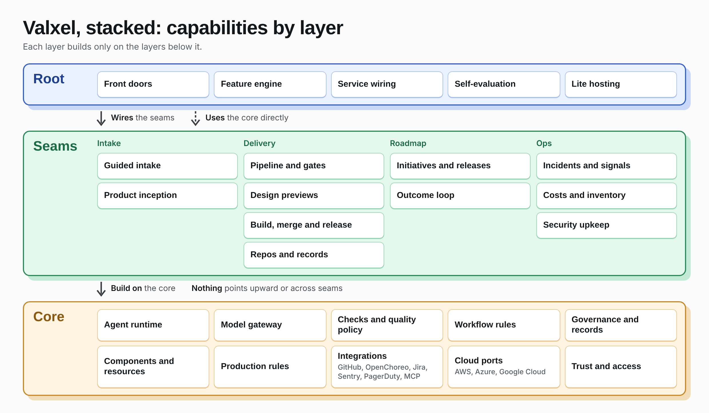
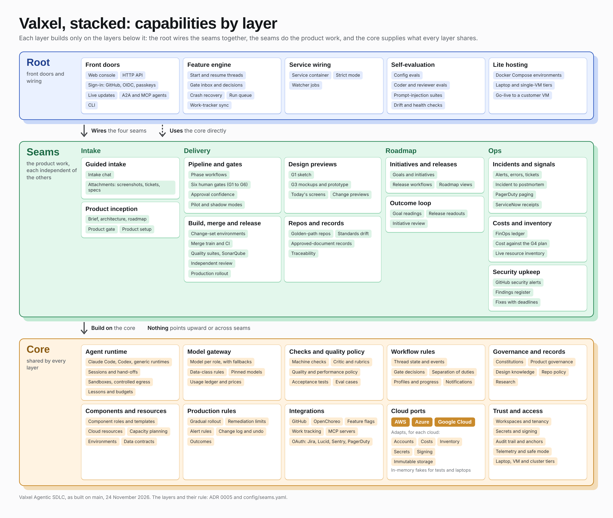

The root holds the front doors and wires everything together; four seams do the product work; the core supplies ten shared capabilities. Every link runs downward or stays in its layer: modules and imports, grouped by what they do.
The same layers as pictures to share: the capabilities alone, and with what each one does. Pick either to open it full size.


Pick a module to see what it uses and what uses it. Packages are grouped; a bold chip is a package's own module (its __init__.py).
The modules most of the tool leans on, and the ones that reach into the most others. A change to the first list touches the most code; the second are the wiring points.
Read from config/seams.yaml and the imports in src/valxel_sdlc at commit 74c5119 (2026-11-26), by scripts/module_map.py. Imports inside functions count; third-party libraries and the managed standard_files/ copied into product repos are left out.